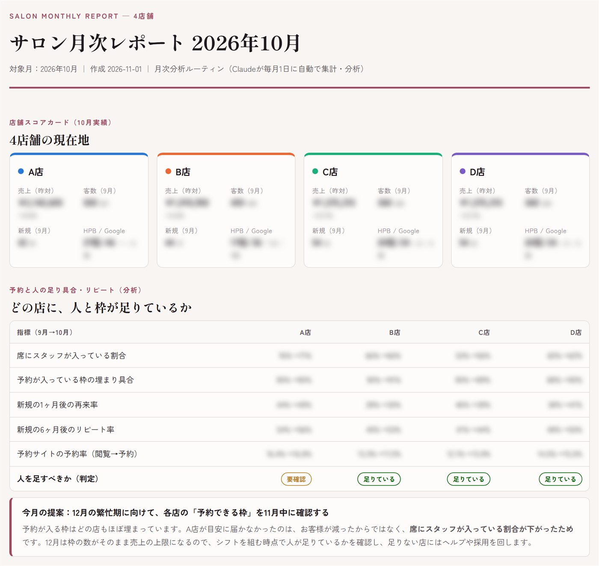
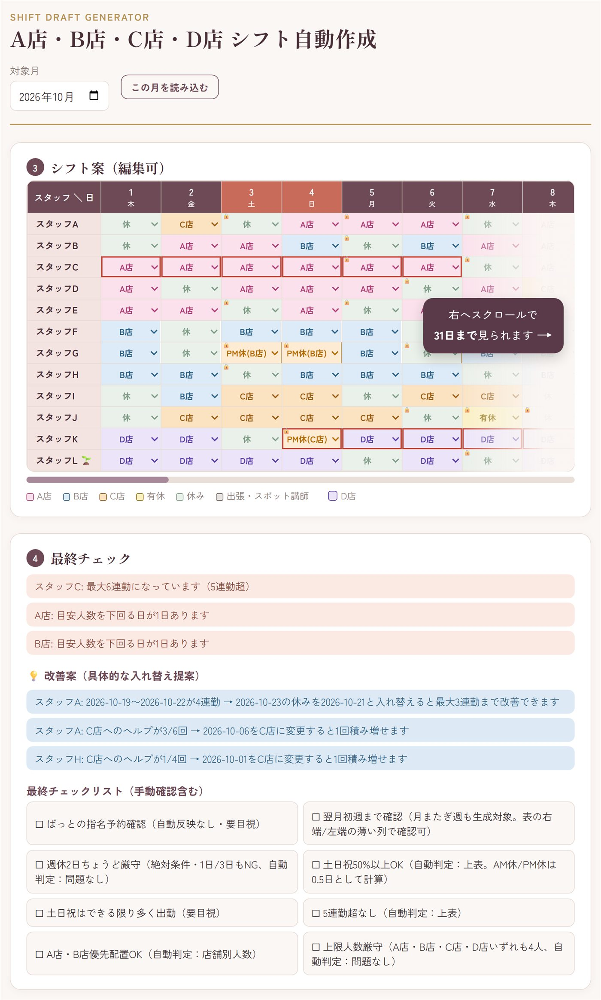
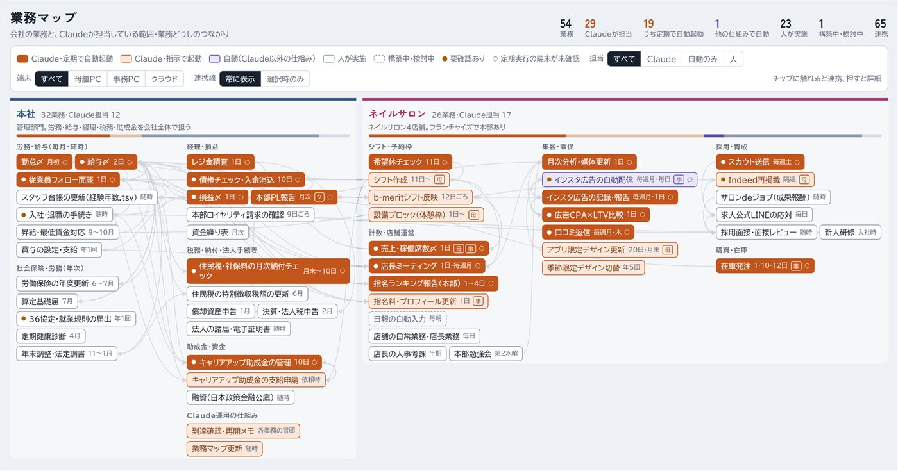

アプリをつくって、公開まで
ゴール設定・AIツールの準備
つくるアプリの全体像と機能を整理し、AIツールの基本設定をします。
画面づくりと使いやすさ
AIと対話しながら画面をつくり、操作の流れを整えます。
データベースの設計・連携
データの形を設計し、アプリとデータベースをつなぎます。
GitHub連携・Vercelで公開
コードを管理して、アプリを公開するところまで体験します。
法人の方へ｜社員研修｜AI未経験〜中級者のための、2日間の少人数対面講座
社員の「毎月の手作業」、AIで減らせるで。
2日間の対面研修で、社員一人ひとりが自分の業務のアプリを1本つくります。研修のあとも、社内で業務改善を続けられる力が残ります。
12月5日（土）・6日（日）開校｜大阪・梅田（中崎町）
ご相談・お見積りは無料です。5日以内に担当者からメールでご連絡します。
校舎長の4店舗の業務（月あたり）
校舎長の実例です（4店舗・月あたり）。結果は人によって異なります。
AIのおかげで、会社員をしながら4店舗を回せています。
その「毎月くり返す業務」を、社員が自分でAIを使って自動化できるようになる研修です。
校舎長のこと
大阪梅田校の校舎長は、会社員として働きながら、大阪で3店舗・兵庫で1店舗のネイルサロンを経営しています。その4店舗の業務をAIでどこまで減らせたかは、このすぐ下でご紹介します。
とくべつなことはしていません。今やっている作業をAIに説明して、出てきたエラーを1つずつ消していっただけです。
ただ、ずっと独学だったので、遠回りもたくさんしました。「最初に誰かと一緒にやれる場があったらよかったのに」と、ずっと思っていました。
その最初の壁を、2日間で一緒に越えるのがMIRAI CAMPです。
校舎長の実例
手作業でやれば毎月かかる時間と、AIで自動化した今の時間です（4店舗・月あたり）。
| 作業 | 手作業 | AI利用後 |
|---|---|---|
| 損益と集客データの集計・チェック | 4〜5時間 | 約30分 |
| 勤怠〆 | 約3時間 | 約20分 |
| 給与〆 | 約3.5時間 | 約1時間 |
| シフト作成と予約システムへの反映 | 約6時間 | 約1時間 |
| 在庫の発注 | 約3時間 | 約30分 |
| その他広告効果の集計・レジ金〆・債権チェック・予約枠の設定・求人スカウト送信・求人掲載更新 | 約12.5時間 | 約1時間30分 |
ほかにも、口コミ返信・店長ミーティングの集計と議事録・スタッフのフォロー面談の日程調整・限定デザインの更新・助成金の書類の準備…もAIで回しています。
校舎長の実例です（4店舗・月あたり）。結果は人によって異なります。
例：校舎長がAIで作って使っている画面

タップで拡大
タップで拡大
タップで拡大浮いた時間は、数字を見て次の手を考えることや、売上を伸ばす新しい施策づくりに回せます。その施策づくりも、AIと一緒に進められます。
MIRAI CAMPからのメッセージ
プログラミングの経験も、AIの知識もいりません。
講師と一緒に、社員が自分の業務を題材に、実際に手を動かしながら学びます。
わからないことは、その場で質問できる。
だから、AIが苦手な社員こそ、
来てください。
作れるものの例です。2日目は、受講する社員が自分の業務から1つか2つの機能に絞って作ります。
毎月集める数字をまとめて、報告用の形に整える。
申請や入力の漏れ・ミスを見つけて、確認する候補を出す。
会議のメモから、決まったことと次にやることを一覧に。
バラバラに管理している進み具合を、1画面で見られるように。
条件を入れると、表の案を作る道具に。
在庫や申請から、発注先ごとのリストを作る。
社員研修としての特長
2日目は、受講する社員が自分の業務の困りごとをテーマに、アプリを1本作ります。研修のための題材ではなく、明日から使うものを作ります。
講師1名あたり受講者5名まで。エラーで止まっても、その場で次の一手が分かります。
外注と違い、「次の業務も自分たちで自動化する」スキルを、社員が持ち帰ります。
研修の価値
よくある研修や外注で起こりがちなことと、MIRAI CAMPの研修を比べました。
| よくある研修・外注で起こりがちなこと | MIRAI CAMPの研修 | |
|---|---|---|
| 実践 | 講義を聞くだけで終わってしまう | 社員が自分の業務で、アプリを1本つくる |
| つまずいたとき | 分からないまま、次の内容に進む | 講師がそばについて、その場で解決 |
| 社内に残るもの | 外注すると、作り方は社内に残らない | 次の業務も自分たちで自動化できる力 |
| 現場での定着 | ツールを入れても、使われない | 自分で作ったものだから、使い続けられる |
※一般的な傾向をもとにした比較です。研修の効果には個人差があります。
2日間のカリキュラム
小さな「できた」を重ねながら、自分のアプリを育てていきます。
日々の仕事から、「これがあったら楽になる」を見つけます。
誰の、どんな手間を減らすのか。画面と機能の設計へ落とし込みます。
AIに意図を伝えながら、画面・処理・データを組み合わせます。
自分で触り、使う人の目線で確かめ、少しずつ磨き上げます。
インターネット上に公開し、スマホやパソコンから開けるようにします。
AIの力を引き出すために必要な、アプリづくりの基礎を体系的に学びます。
目的に合った答えを引き出す、指示文の考え方とコツ。
ウェブアプリの構成や動きの基本と、画面づくりの考え方。
データの持ち方の基礎と、アプリとデータベースのつなぎ方。
GitHubでの管理と、Vercelでの公開までの手順。
具体的に、何をする？
1日目は、アプリの公開までを一度体験。2日目は、自分の仕事のアプリを自分の手でつくります。
つくるアプリの全体像と機能を整理し、AIツールの基本設定をします。
AIと対話しながら画面をつくり、操作の流れを整えます。
データの形を設計し、アプリとデータベースをつなぎます。
コードを管理して、アプリを公開するところまで体験します。
自分の業務の中から作るものを決め、画面と機能を設計します。
1日目の流れを使い、講師に相談しながら制作を進めます。
実際に触りながら、使いやすく磨き上げます。
完成したものを公開して発表し、次のアイデアを共有します。
各日10:00〜17:00。制作内容や進み方により、到達点は異なります。
受講生の変化（ビフォー・アフター）
「この集計、担当者しか分からない…」
担当者が、いくつものファイルから手で集計する。休むと止まり、引き継ぎもむずかしい。
「自動化してあるから、誰でも回せる。」
社員が自分で作ったアプリが集計する。手順が自動化されて、確認と引き継ぎもしやすくなる。
※イメージです。何を作れるか・どこまで減らせるかには個人差があります。
受講生の声
業種はちがっても、「毎月くり返す業務を、自分のアプリにした」は同じです。梅田校の1期生の声も、これから集めていきます。
内容は各受講生の体験であり、成果を保証するものではありません。
運営主催からのメッセージ
運営主催・入江 巨之さんからの1分メッセージ。まずは動画でご覧ください。
講師・運営体制
事業を伸ばす力と、教育を続ける力。本部の体制のもとで、梅田校の講師が一人ひとりに寄りそいます。
事業統括
株式会社サムライパートナーズ 代表取締役CEO
「ReZARD」「Nontitle」などを手掛け、アイデアを事業に育てるビジネスプロデューサー。
教育責任者
教育・カリキュラム統括
AIの研究・開発・事業化に約20年。仕事に直結する「つくるためのAI教育」を届ける。
大阪梅田校
1回最大10名。講師1名あたり受講者5名までなので、講師が一人ひとりの横について進めます。
助成金
人材開発支援助成金などの対象になる場合があります。顧問の社労士がいらっしゃらない場合は、社労士のご紹介もできます。
料金・受講条件
会場・人数・料金・ご用意いただくものをまとめました。くわしくは、お問い合わせのあとのヒアリングでご案内します。
| 項目 | 法人研修の実施条件 |
|---|---|
| 会場 | 大阪梅田校の教室大阪市北区・中崎町 |
| 日数・時間 | 連続する2日間各日 10:00〜17:00 |
| 人数 | 1名からご相談ください社員の方だけでの開催もご相談いただけます |
| 研修の内容 | 社員が自分の業務のアプリを1本つくる1日目に作り方の型、2日目に自分の業務で制作 |
| 料金 | お問い合わせください人数・日程・助成金の活用の有無によってご案内します |
| 助成金 | 活用できる場合があります社員の方の受講で、要件を満たした場合 |
| ご用意いただくもの | 受講する社員のノートパソコンClaude Pro（月20ドル程度）のご契約も必要です |
| 講師のサポート | 講師1名あたり受講者5名までその場で質問できます |
※助成金は、社員の方の受講で要件を満たした場合に限ります（経営者・役員ご本人は対象外）。支給の判断は労働局が行います。
社員1人が、集計・転記・チェック作業などに毎月かけている時間（1人あたり）
AIを使わないままだと、この業務に
年間 - 円分の時間を使い続けます。
校舎長と同じように85%減らせたら、
年間 - 円分の時間が浮きます。
入力した数字にもとづく仮の計算です。85%は校舎長の実例（4店舗の業務・月あたり、約32〜33時間→約4時間50分）で、効果を約束するものではありません。
こんなときに役立ちます
作れるものの例です。何を作るかは、ヒアリングと研修の中で決めます。
お問い合わせのあとの流れ
下のフォームから、会社名・人数・ご希望の時期をお送りください。
オンラインで、社員の方の業務と研修の目的を伺います。
人数・日程・料金・助成金の活用の有無をご提案します。
助成金を使う場合は、研修開始の1か月前までに貴社（または社労士）が提出します。
大阪梅田校の教室で実施します。
最初の一歩
まずは、社員の方の業務と研修の目的をお聞かせください。
AIは、社員と会社の時間を生み出す力にもなります。
ご相談・お見積りは無料です。人数や時期が決まっていなくても大丈夫です。
会社名・ご担当者名・人数・ご希望の時期・助成金の活用のご希望をお送りください。内容を確認のうえ、5日以内に担当者からメールでご連絡します。